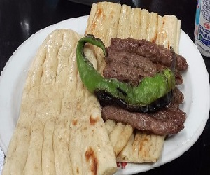
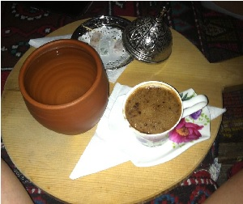
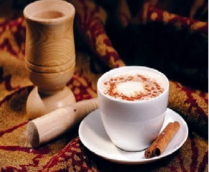
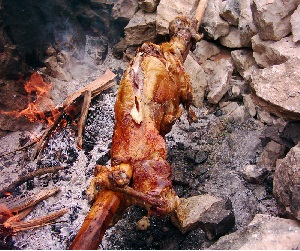
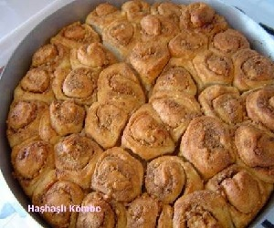

BURDUR'DA NE YENİR?
BURDUR ŞİŞ
Burdur’un sadece Burdur’da meşhur olan yemeklerinden biri Burdur Şiş’tir. Baharatsız sossuz kıymalar 10 santimlik köfteler halinde şişe geçirilerek yapılır. Sadece et yersiniz ve etin tadını alırsınız.

HARMANDALI KAHVESİ
Burdur ilinin Tefenni ilçesinde sadece bir kafede bulunur. Türk kahvesine benzer fakat içinde farklı tatlar bulundurur.7 çeşit kahve türünü karıştırarak yaparlar.

CEVİZ EZMESİ
Burdur iklim olarak ceviz yetiştirmeye uygun bir yer, cevizden de badem ezmesine benzer şekilde ceviz ezmesi yapılır. Yine sadece Burdur’da meşhurdur ama çok güzel ve sağlıklıdır.

BUCAK SALEBİ
Burdur’un en büyük ilçesi olan Bucak salebi ile meşhur. Toros dağlarının yükseklerinde yetişen bir çeşit orkide olan salep bitkisinden elde edilen salep Türkiye genelinde meşhur olma yolunda ilerliyor.

DİRMİL KEBABI
Dirmil, yeni adıyla Altınyayla ilçesinin kebabı meşhurdur. Altı aylık kuzu veya oğlak etinin odun kömürü közünde en az üç saatlik çevrilmesiyle pişirilir.

KÖMBE
Türkiye’nin pek çok yerinde kömbe adını taşıyan çörek ve tatlılar var. Burdur’da yapılan haşhaş ve pekmez ile yapılan bir çeşit hamurlu çörek. Puf puf kabaran, sıcakken ayrı, soğukken ayrı güzel, çayın yanında yemek için nefis bir çörektir.
